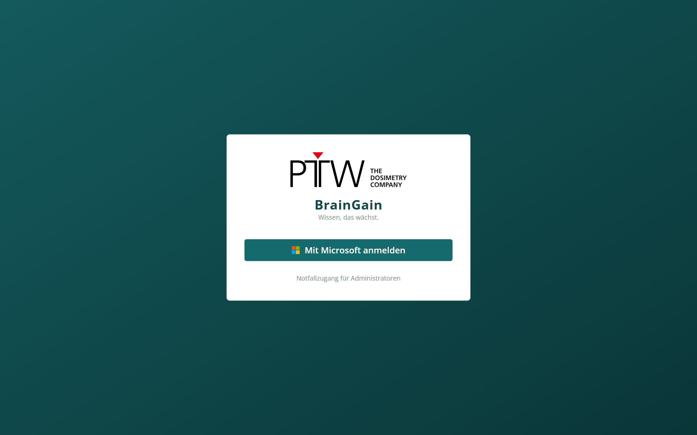
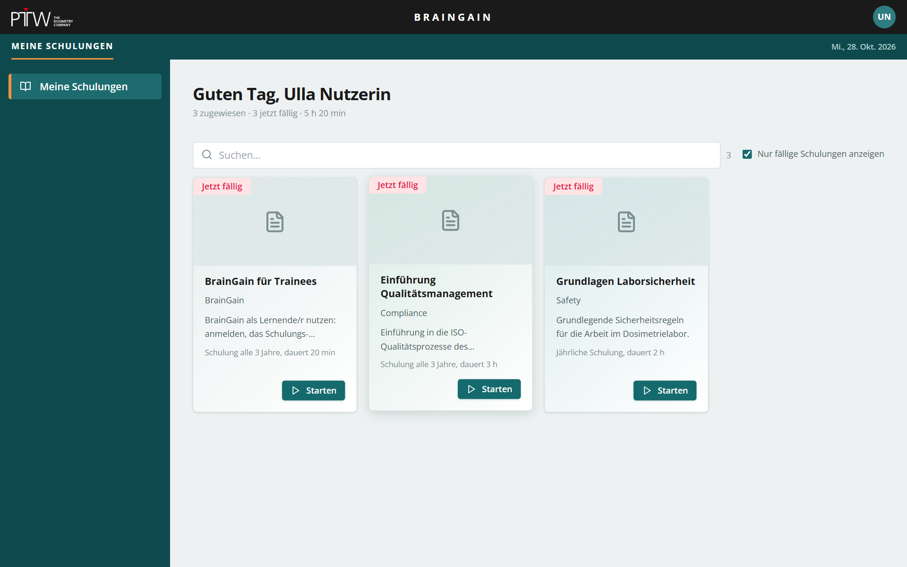
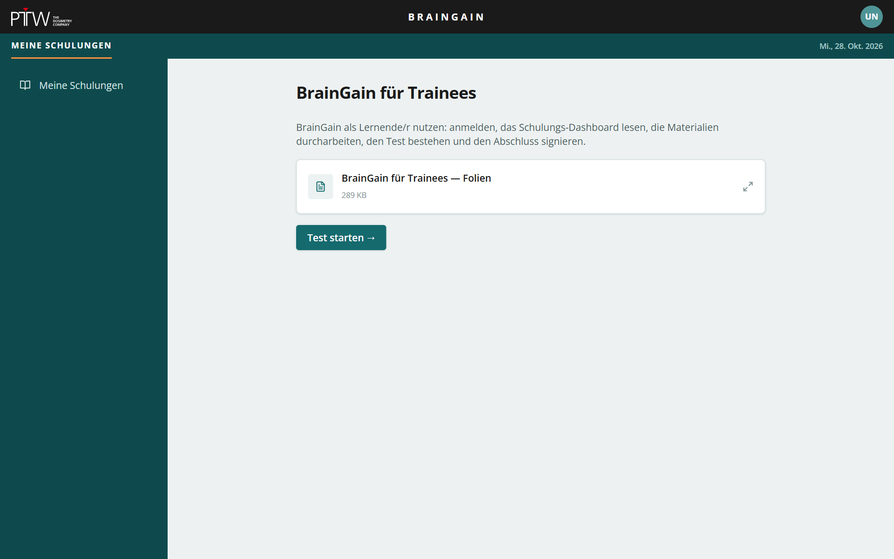
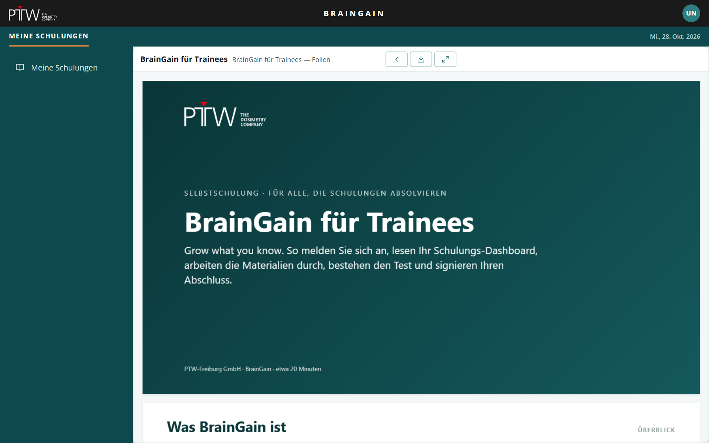
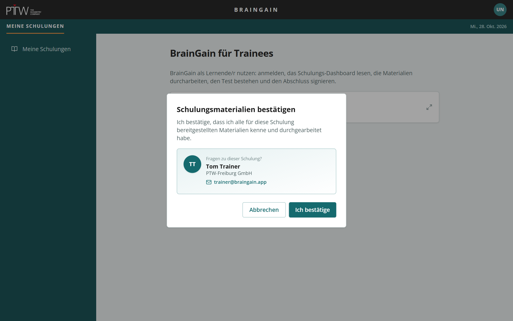
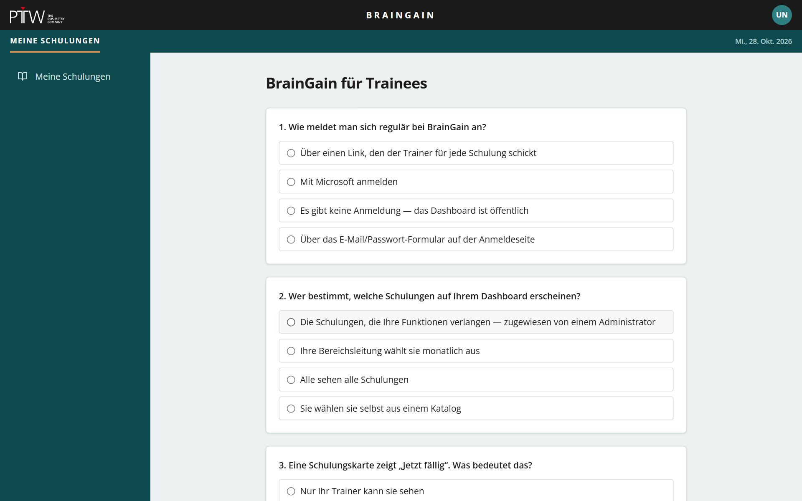
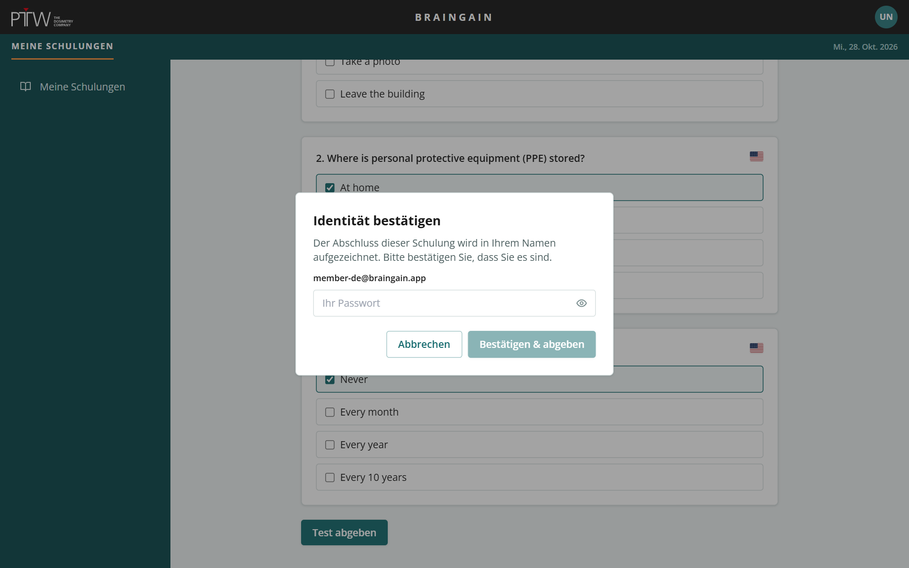
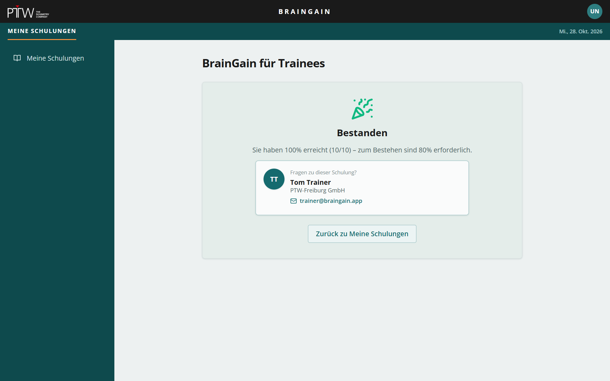
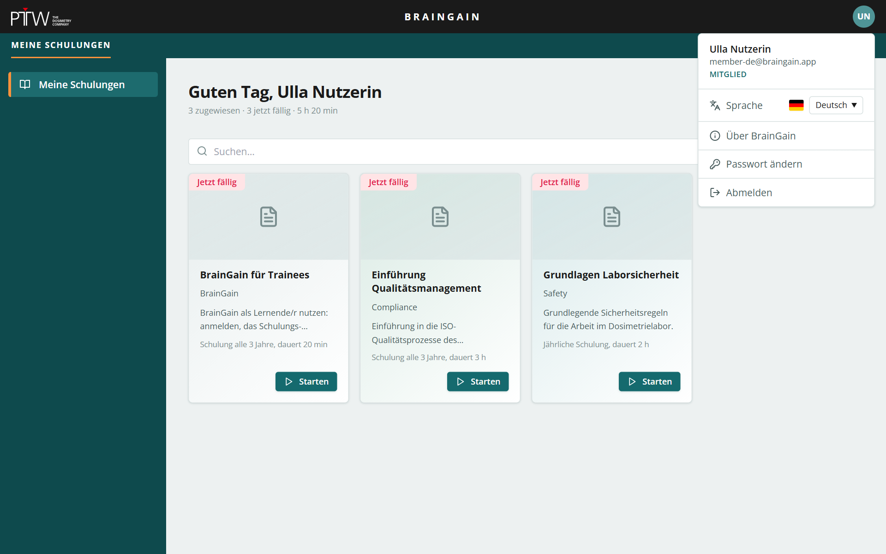

Selbstschulung · für alle, die Schulungen absolvieren
BrainGain für Trainees
Grow what you know. So melden Sie sich an, lesen Ihr Schulungs-Dashboard, arbeiten die Materialien durch, bestehen den Test und signieren Ihren Abschluss.
Grow what you know. So melden Sie sich an, lesen Ihr Schulungs-Dashboard, arbeiten die Materialien durch, bestehen den Test und signieren Ihren Abschluss.
BrainGain verwaltet die Pflichtschulungen unseres Unternehmens. Es zeigt Ihnen, welche Schulungen Sie absolvieren müssen, wann sie fällig sind, und zeichnet den Nachweis auf, dass Sie sie abgeschlossen haben.
Mit Ihrem Microsoft-Konto.
Dashboard „Meine Schulungen“.
In BrainGain öffnen, Durchsicht bestätigen.
Abschluss mit Passwort oder Microsoft signieren.
Anmelden und das Dashboard verstehen.


Jede Schulung hat einen Wiederholungszyklus (z. B. jährlich). Um das Fälligkeitsdatum öffnet sich ein Zeitfenster, in dem Sie sie absolvieren können; nach einer Kulanzfrist gilt sie als überfällig.
| Etikett | Bedeutung | Was tun |
|---|---|---|
| Jetzt fällig | Sie haben diese Schulung noch nie bestanden, oder der Wiederholungszyklus ist erreicht. | Jetzt absolvieren. |
| Jetzt fällig · bis Datum | Das Zeitfenster ist offen; das Datum ist das Ende des laufenden Zyklus. | Vor dem Datum absolvieren. |
| Überfällig | Fälligkeitsdatum und Kulanzfrist sind verstrichen. | Sofort absolvieren — auch Ihre Bereichsleitung sieht das. |
| Aktuell · Fällig am Datum | Sie haben bestanden; das nächste Fälligkeitsdatum wird angezeigt. Sie können die Schulung weiterhin öffnen, um das Material zu wiederholen. | Nichts zu tun. |
| Aktualisiert · bis Datum | Der Trainer hat neue Inhalte veröffentlicht und bittet alle, die bereits bestanden haben, bis zum Datum zu reagieren. | Erneut absolvieren oder sichten und bestätigen — die Schulung sagt Ihnen, was. |
| In Vorbereitung | Die Schulung existiert, hat aber noch keine veröffentlichte Version. | Warten — Sie können sie nicht starten. |
Material, Bestätigung, Test, Signatur, Ergebnis.
Starten auf einer Karte öffnet die Schulung. Die erste Seite listet ihr Lernmaterial.


Hochgeladene PDFs, Videos und Bilder öffnen sich in einem Viewer, der die Seite ausfüllt. Die Bedienelemente sind Symbole mit Tooltips:
Bevor ein Test beginnt, bittet BrainGain Sie zu bestätigen, dass Sie alle Materialien kennen und durchgearbeitet haben.


Die Testabgabe wird in Ihrem Namen aufgezeichnet — wie eine Unterschrift auf einer Anwesenheitsliste. Deshalb bittet BrainGain Sie zu bestätigen, dass Sie es wirklich sind.


Ihr Ergebnis und die Bestehensgrenze werden angezeigt. Der Abschluss wird mit Datum und Uhrzeit gespeichert; die Karte wird Aktuell mit dem nächsten Fälligkeitsdatum.
Fehlversuche werden nicht gespeichert. Klicken Sie Test wiederholen, so oft Sie möchten — die Schulung bleibt fällig, bis Sie bestehen. Je nach Einstellung werden die falsch beantworteten Fragen aufgelistet (nie die richtigen Antworten).
Aktualisierte Schulungen, SCORM-Kurse, Ihr Konto.
Trainer können neue Inhalte für eine Schulung veröffentlichen. Entscheiden sie, dass alle, die bereits bestanden haben, reagieren müssen, zeigt Ihre Karte Aktualisiert · bis Datum, Sie erhalten eine E-Mail, und die Schulung öffnet sich mit einem Hinweisbanner.
Durchlaufen Sie die Schulung wie beim ersten Mal: Material, Bestätigung, Test, Signatur. Das neue bestandene Ergebnis startet auch Ihren regulären Zyklus neu.
Öffnen Sie das aktualisierte Material, klicken Sie Aktualisiertes Material bestätigen → und bestätigen Sie. Kein Test. Ihr regulärer Zyklus bleibt unverändert; die Karte wird wieder Aktuell.
Manche Schulungen werden als importierter interaktiver Kurs vermittelt statt als Material plus Test. Der Kurs ist Material und Test zugleich.
Starten startet den Kurs in BrainGain. Es gibt keine Materialliste; der Kurs führt Sie.
Die Titelzeile zeigt nach jedem Schritt Gespeichert …. Beenden und später fortsetzen lässt Sie dort weitermachen, wo Sie aufgehört haben. Von vorn beginnen verwirft den Fortschritt.
Meldet der Kurs, dass Sie fertig sind, erscheint der Knopf Abschließen und signieren — dieselbe Identitätsbestätigung wie beim Test.
Der Kurs ist nicht BrainGains eigene Oberfläche. Er braucht nie Ihr Passwort — fragt er nach Zugangsdaten, stoppen Sie und informieren Ihren Trainer.

Klicken Sie auf Ihre Initialen oben rechts.
Schließen Sie diesen Viewer mit ‹ Zurück, klicken Sie Test starten →, bestätigen Sie das Material und beantworten Sie die Fragen. Alles Nötige steht in diesen Folien.
10 Fragen · Single und Multiple Choice · unbegrenzte Versuche